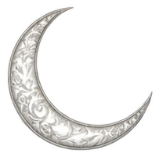
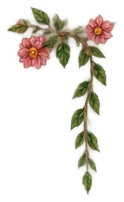
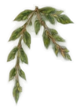

In the name of Allah,
the Most Gracious, the Most Merciful
With the blessings of the Almighty
and the love of our families,
we joyfully invite you to celebrate
the wedding reception of
Rahil & Meha
Join us for the
Wedding
Reception
December
Saturday
12
5:30 PM
2026
Venue
Galio Celebration
Pannicode, Calicut, Kerala
–Days
–Hours
–Mins
Your presence is our blessing


